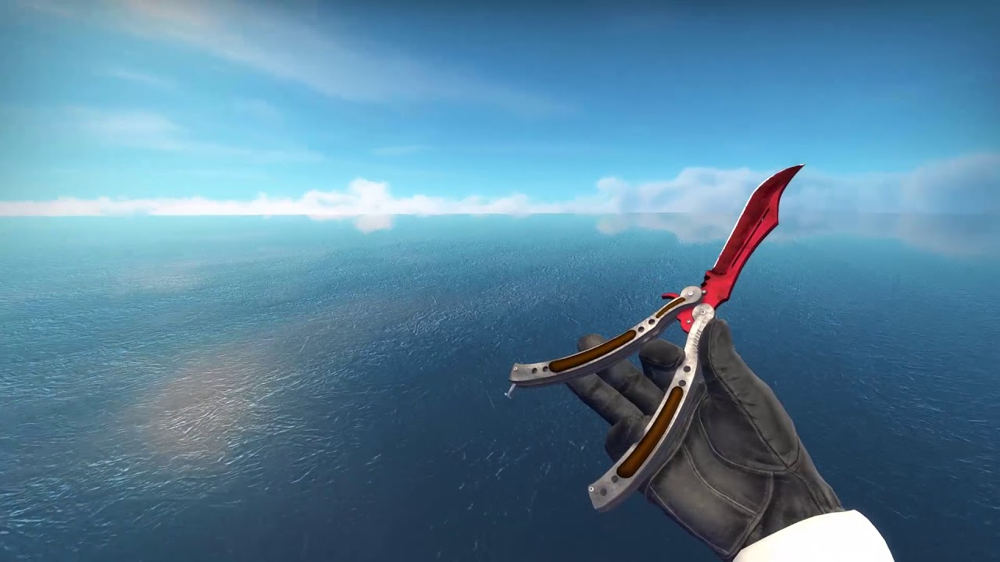
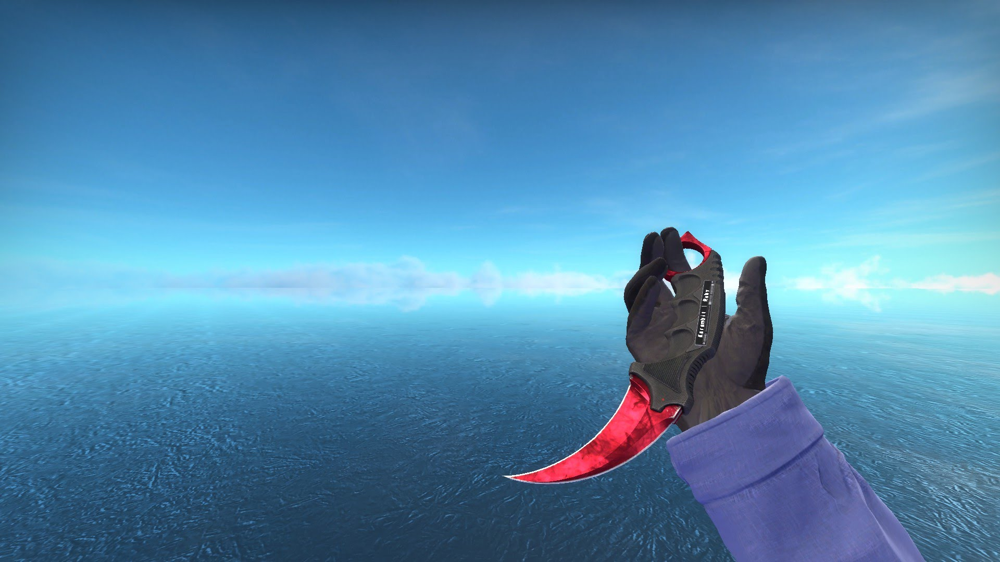
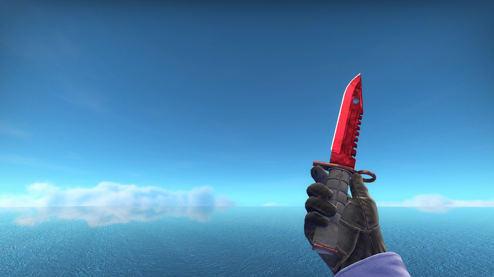
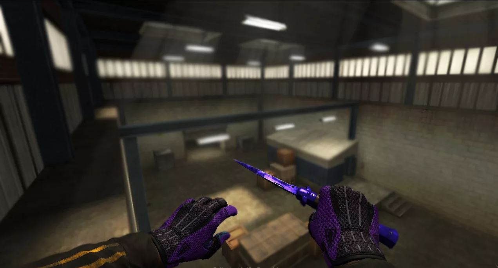
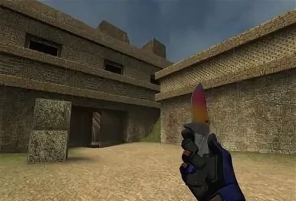

Skinsbank


Butterfly knife "Ruby"
Нож-бабочка рубин с хорошим видом от первого лица.
Красивая анимация осмотра.
Красивая анимация при выборе.
Ошибочных файлов нету (проверено).

Karambit "Ruby"
Керамбит рубин с хорошим видом от первого лица.
Анимации при осмотре и выборе не изменены от стандартных
Ошибочных файлов нету (проверено).

M9 Bayonet "Ruby"
M9 с хорошим видом от первого лица.
Анимации при осмотре и выборе не изменены от стандартных
Ошибочных файлов нету (проверено).

Talon "Fade"
Коготь Градиент с отличным видом от первого лица.
Анимации при осмотре и выборе не изменены от стандартных.
Ошибочных файлов нету (проверено).

Talon "Sapphire"
Коготь Сапфир с отличным видом от первого лица.
Анимации при осмотре и выборе не изменены от стандартных.
StatTrak™.
Ошибочных файлов нету (проверено).

Stilleto "Sapphire"
Стилет Сапфир с отличным видом от первого лица.
Анимации при осмотре и выборе не изменены от стандартных.
Ошибочных файлов нету (проверено).

Nomad knife "Fade"
Нож бродяга Градиент с отличным видом от первого лица.
Анимации при осмотре и выборе не изменены от стандартных из CS:GO.
Качественная текстура градиента.
Ошибочных файлов нету (проверено).